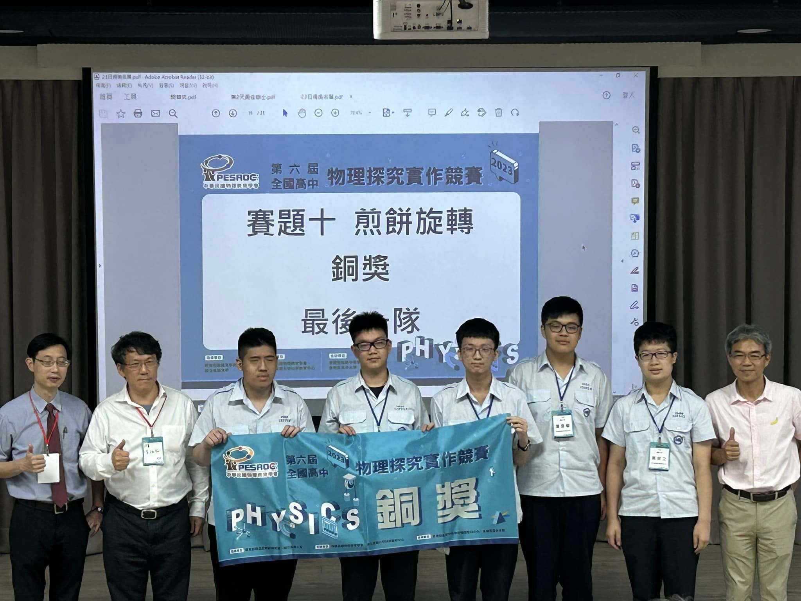

Competitions:
- 2024 Taipei City’s 57th Primary and Secondary School Science Exhibition Excellence Award
- 2024 Taiwan International Science Fair (Computer Science and Information Engineering) Fourth prize
- (includes students from all over the world, including USA, France, Japan, Korea, India, Turkey, Brasil, etc.)
This study aims to explore the application of large language models in generating stories from music.
The motivation for this research stems from the intrinsic role of music in culture, but accurately expressing the emotional narratives within music through text is considered to be challenging.
This study introduces an approach to ensure that stories encapsulate the emotional fluctuations present in the music.
With the advancement of large language models, we have witnessed their applications in various creative domains.
The objective of this research is to develop a system that takes music as input and produces stories sentimentally embedded within the music, demonstrating a proof of concept by combining multiple models.
The study utilizes tools such as PyTorch and investigates shared representations of text and music as a means to achieve emotional alignment between these mediums of communication.
The results of the research indicate that the models for music and text emotion recognition perform well, and a complete generation process has been developed.
In short, there are currently models that directly generate music, and there are also models that integrate music into an introduction, but there is no model that generates stories based on the emotions in the music. Our research is to solve this problem by utilizing our models trained for music and text emotion recognition with the LLaMA 2 public pre-trained model to generate stories with emotional fluctuations similar to the target music. We also propose to train a GAN model that can directly transform music into emotionally homogeneous tales by combining STFT-represented music, vectorized text of the corresponding tale, and the vectorized topic of the tale into an image to train the discriminator and then the generator.
- 2023 Intel® AI Global Impact Festival Country/Region/Territory Recognition for AI Projects

- 2023 “I think, therefore I am!” - SDGs National High School Smart Makers Proposal Competition Creativity Award
- 2023 Taiwan National High Performance Engineering Application Competition Honorable Mention Award
- 2023 The 6th National High School Physics Research and Practice Competition Bronze Award
- 
- 2023 National High School Medical Technology Creativity Competition (Smart Medical Treatment) Honorable Mention Award

- 2023 “Looking Up Cup” National Science HomeRun Implementation Competition Excellence Award
- 2022 National “Creative Application of Emerging Technology and Information Technology” Competition held by Taiwan Department of Education First Place
- 2022 National High School Emerging Technology - Smart Internet of Things Creative Application Competition Honorable Mention Award
- 2020 Taipei Municipal Junior High School Future Talent Prize Winner, awarded by the Principal of Taipei Municipal Junior High School
Certifications:
- Advanced Placement Computer Science (not to be confused with AP CSA)
-
Programming concept questions: 4/5
Programming implementation questions: 4/5
- Data Structure & Advanced C++ Programming Course Certificate, College of Electrical Engineering & Computer Science, National Taiwan University (2019)
- C/C++ Programming Course Certificate, College of Electrical Engineering & Computer Science, National Taiwan University (2018)
- Arduino Coding and Makers Fair Certificate, CodingAPE Academy (2017)
- HASSE Junior Space School Certificate, Houston Texas (2017)
Other related extracurricular activities(Apart from competitions):
- Mechanical and electrical integration winter vacation training preliminary class
- held by Affiliated Senior High School of National Taiwan Normal University Robotics Club & New Taipei Municipal ChingShui High School Emerging Technology Club
- HSNU Robotics Club
- Assisted other peers in understanding what was being taught
- HSNU Computer Club
- Gave lectures on programming language “Haskell”
- Other programming projects:
- Better version of largecats/comics-ocr that uses LLMs to correct the text using Python
Interpreter for programming language based on collisions using raylib.zig
Robot that identifies pests using C and Python
Visualizing Legendre's polynomials using gnuplot.h (C++)
Visualizing vectors, dot and cross operations using gnuplot.h (C++)